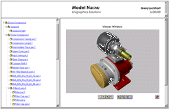
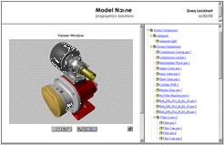
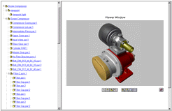
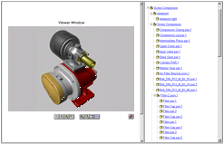
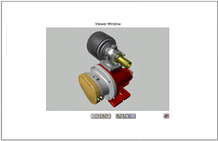

Web Publisher Wizard (Template Layout)
At this step, you may choose a pre-defined template for your web page or enter the location for a web page template to be used when generating your web page.
- Wizard Options
- Choose a Template for Your Web Page
-
Allows you to choose a template for your web page. The wizard has default web page template layouts available or you may generate your own web page layouts using the template in the Solid Edge\WebPublish directory.
- Header - Viewer Right
-
Displays the header information with the viewer on the right and the assembly/part information on the right.

- Header - Viewer Left
-
Displays the header information with the viewer on the left and the assembly/part information on the right.

- Viewer Right
-
Displays the viewer on the right and the assembly/part information on the left. The header information is not displayed.

- Viewer Left
-
Displays the viewer on the left and the assembly/part information on the right. The header information is not displayed.

- Viewer Only
-
Displays the viewer only. The header information or the assembly/part information is not displayed.

- Custom
-
Users may define their own custom web page template by duplicating the WebPublish\default directory and making modifications to the .html and/or .css files. An example could be modifying the frame_layout.html file to have the header information appear over the assembly tree frame with the viewer frame completely taking up the whole right half of the browser window.
- Template directory
-
The template directory is the top level for the directories that contain web page layout information. When publishing a web page, the directory specified is copied to Save Location defined in the Save Location page of the wizard. For the default layouts ( Header - Viewer Right, Head - Viewer Left, Viewer Right, Viewer Left, Viewer Only), the Solid Edge\WebPublish\default directory is used.
- Overwrite existing templates
-
If overwrite existing templates is selected, the files in the Template directory will be copied into the Save Location. If the overwrite existing templates is not selected, only the assembly and part data is written to the Save Location and the .html and .css files in the Save Location are not modified.
Look up more details
Publish commandRelated Topics
Solid Edge Web Publisher WizardWeb Publisher Wizard (Page Layout Information)
Web Publisher Wizard (Publish Format)
Web Publisher Wizard (E-mail Details)
Web Publisher Wizard (Save Archive)
Web Publisher Wizard (Save Location)
Web Publisher Wizard (Summary Page)